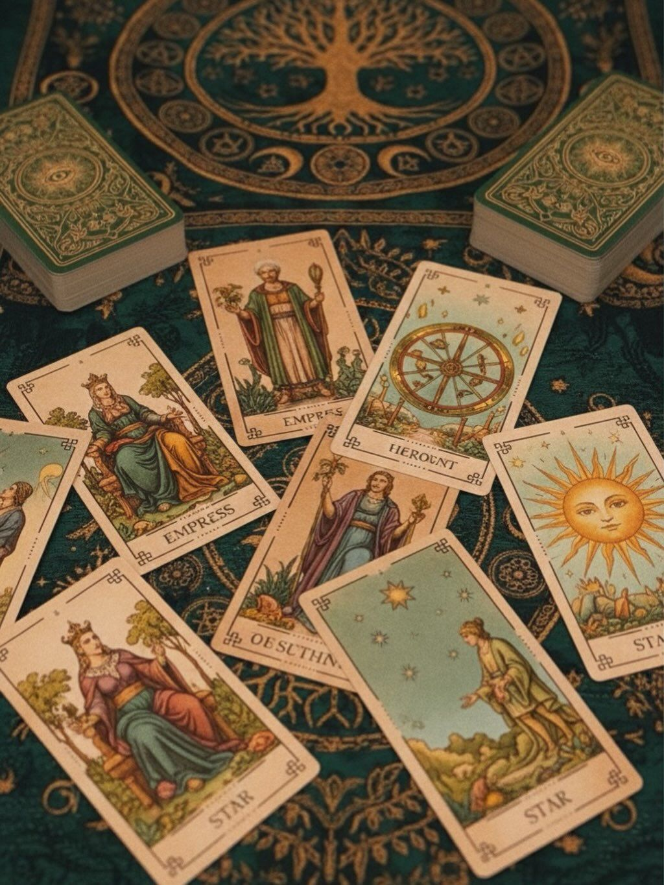

Каталог эзотерической атрибутики
Выберите товары для духовных практик, медитации и гармонии
Категории товаров

Кристаллы и камни
Натуральные минералы для энергии, защиты и медитации

Карты Таро и Оракулы
Колоды для гадания, самопознания и предсказаний
Популярные товары
| Товар | Описание | Цена |
|---|---|---|
| Кристалл горного хрусталя | Натуральный кристалл для очищения энергии и медитации | 1 200 ₽ |
| Карты Таро Райдера-Уэйта | Классическая колода для начинающих и профессионалов | 2 500 ₽ |
| Набор свечей для ритуалов | 7 цветных свечей для разных магических практик | 850 ₽ |
| Аметистовый жеод | Природный жеод с кристаллами аметиста для защиты | 3 400 ₽ |